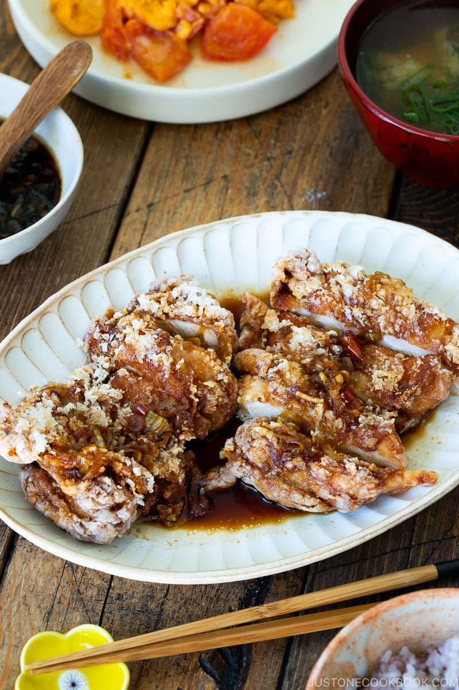

Fried Chicken with Scallion Soy Sauce (Yurinchi)

Spicy and tangy, fried comfort food to remember
Fried chicken with a spicy asian twist!
Crispy outside, juicy inside, which a savory tangy sauce to bring it all together... Variety is the spice of life!
Ingredients
For the Fried Chicken
- 2 boneless, skin-on chicken thighs
- ¼ tsp Diamond Crystal kosher salt (use half as much for table salt and two-thirds for sea salt by volume)
- ⅛ tsp freshly ground black pepper
- 2 tsp sake
- 2 tsp soy sauce
- 4 Tbsp potato starch or cornstarch
- 2 cups neutral-flavored oil
For the Scallion Soy Sauce
- 1 long green onion
- 1 dried red chili pepper
- 1 Tbsp roasted sesame oilr
- 1 Tbsp sake
- 2 Tbsp rice vinegar (unseasoned)
- 1½ Tbsp sugar
- 6 Tbsp soy sauce
Steps
- For the sauce: Cut and separate the white and green parts of the Tokyo negi and keep the green part for another use. Thinly slice the white part of the negi.
- Cut one end of the dried red chili pepper and shake it to discard the seeds inside. Cut into thin rounds. Set aside.
- In a small saucepan, heat the sesame oil over medium heat. Once hot, add the white part of the negi and stir-fry for 1-2 minutes.
- Add the red chili pepper and stir-fry for 15 seconds.
- Add the sake, vinegar, sugar, and soy sauce. Bring the mixture to a simmer for 30 seconds and turn off the heat. Set aside. You will reheat the sauce again right before you serve the fried chicken. The sauce is plenty for 3 thighs. If you have an extra, keep the leftovers to drizzle on other dishes (tofu, fish, etc.)
- For the chicken: Put the chicken skin side up in a tray or flat container. Prick the chicken skin using a fork or the tip of a knife. This helps the marinade reach the meat under the skin more easily. Season both sides of the chicken with salt and pepper.
- Add the sake and soy sauce to the chicken and coat it well. Set aside.
- Add the oil to a medium pot (I used this carbon steel pot) and bring it to 340ºF (170ºC) over medium heat. If you don’t have an instant-read thermometer, you'll know the oil is the right temperature when you insert a wooden chopstick into the oil and small bubbles appear around it.
- While heating the oil, prepare the potato starch in a shallow tray or container and coat the chicken with potato starch, pressing the starch onto the chicken and shaking off any excess. The potato starch will absorb the moisture from the chicken and adhere nicely while waiting for the oil.
- When the oil reaches 340ºF (170ºC), gently put one piece of chicken into the oil, skin side down, and cook for 5 minutes, flipping the chicken halfway through. Don't touch or flip the chicken for the first 30 seconds until the coating has set. Why do we deep-fry only one piece at a time? You don't want to reduce the oil temperature drastically by adding too much food to the oil at once. Scoop up and discard any fried crumbs in the oil with a fine-mesh skimmer so the oil does not get darker and dirtier with burnt crumbs.
- Halfway through, flip the chicken. Keep watching the oil temperature and make sure it doesn’t go higher than 340ºF (170ºC) or else the chicken will brown too quickly while the inside will remain undercooked.
- After 5 minutes, transfer the chicken to a wire rack or a plate lined with paper towels and let it sit to remove excess oil. The hot oil on the exterior will slowly continue to cook the meat as it sits. After the fried chicken has rested for 3 minutes, check to make sure the internal temperature of the chicken is at least 165ºF (74ºC) with an instant-read thermometer. Repeat with the second piece of chicken.
Home